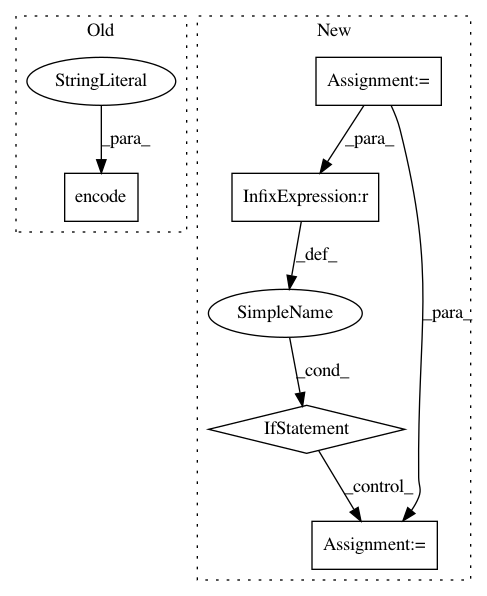

c7dfdcef44d181ee2b834e3b0fb06c9c82f952b3,horovod/run/common/util/host_hash.py,,host_hash,#,33
Before Change
hostname = socket.gethostname()
ns = _namespaces()
host_ns = hostname + "-" + ns
hash = hashlib.md5(host_ns.encode("ascii")).hexdigest()
return "%s-%s" % (hostname.split(".")[0], hash)
After Change
// when running in YARN containers we need to consider a container a host
// otherwise we might violate resource allocation if we run all tasks of a host in one container
// see [issues 1497](https://github.com/horovod/horovod/issues/1497) for details
container = os.environ.get("CONTAINER_ID")
if container is not None:
host_info = "{host_info}-{container}".format(host_info=host_info, container=container)
return "{host}-{hash}".format(host=host, hash=_hash(host_info))
In pattern: SUPERPATTERN
Frequency: 4
Non-data size: 5
Instances
Project Name: horovod/horovod
Commit Name: c7dfdcef44d181ee2b834e3b0fb06c9c82f952b3
Time: 2019-11-20
Author: github@enrico.minack.dev
File Name: horovod/run/common/util/host_hash.py
Class Name:
Method Name: host_hash
Project Name: oddt/oddt
Commit Name: e7dfbe88426950ff5f730681e68fd8b28e59ee3b
Time: 2016-12-19
Author: maciek@wojcikowski.pl
File Name: oddt/pandas.py
Class Name: ChemDataFrame
Method Name: to_excel
Project Name: tensorflow/tensorboard
Commit Name: 005be3f794c134d26fc9adb98c4dffcbccd33f89
Time: 2019-05-10
Author: jameswex@users.noreply.github.com
File Name: tensorboard/plugins/interactive_inference/witwidget/notebook/visualization.py
Class Name: WitConfigBuilder
Method Name: _convert_json_to_tf_examples
Project Name: akkana/scripts
Commit Name: 4b660c262a857f0d3bcc41d56e12af35f7d3f6ec
Time: 2018-10-26
Author: akkana@shallowsky.com
File Name: epubtag.py
Class Name: EpubBook
Method Name: get_matches